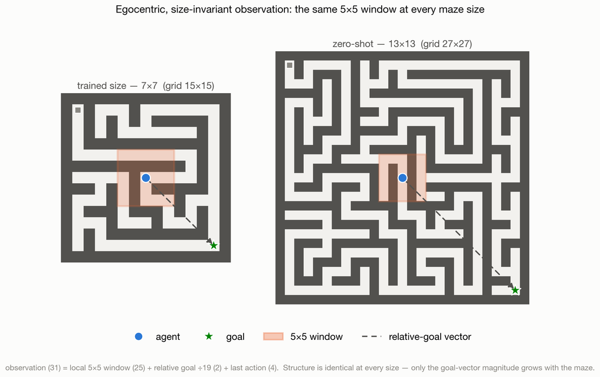
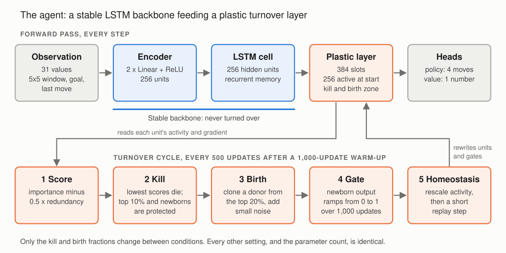
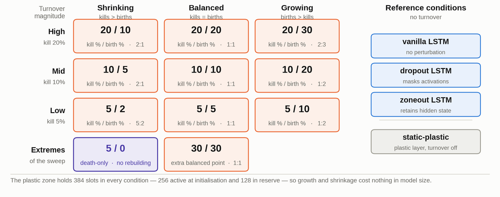
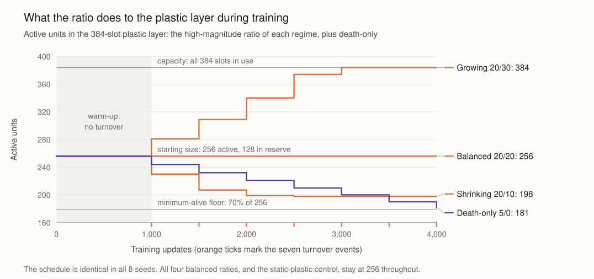
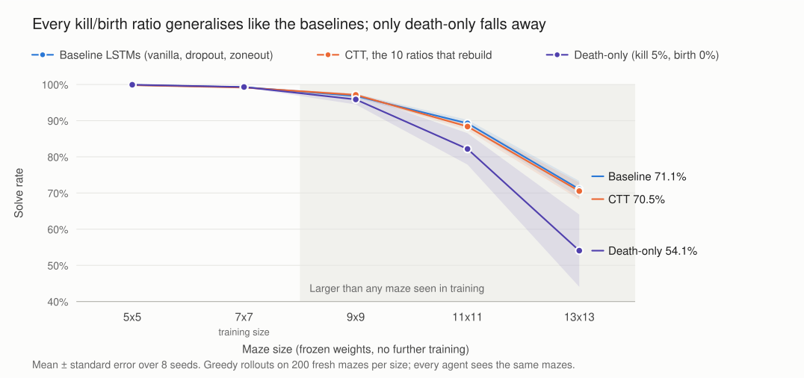
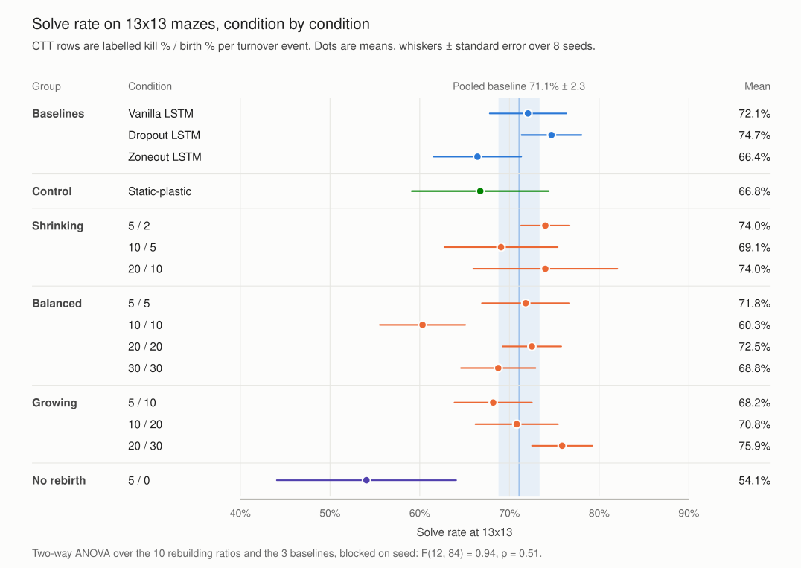
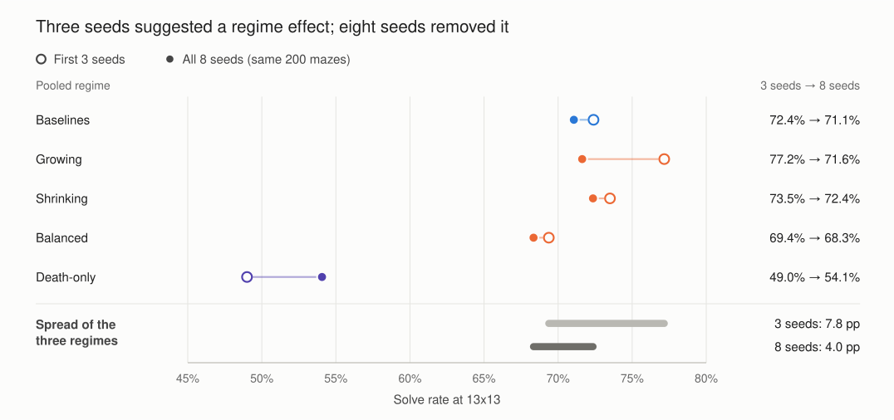
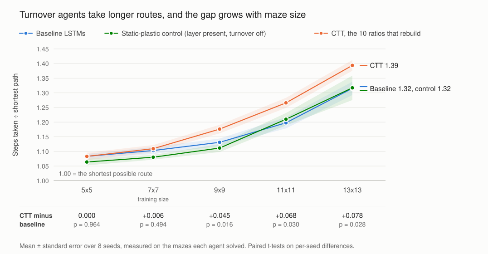

Summary
Complementary Turnover Training (CTT) permanently kills neurons during training and grows new ones in their place. Earlier work fixed the balance between killing and rebuilding at a single small, symmetric rate. My half of the project made that balance the experimental variable, and asked whether it changes how well an agent copes with problems bigger than any it trained on.
I trained LSTM maze-navigation agents under fourteen conditions and tested every one, with frozen weights, on mazes up to 13x13. The kill/birth ratio made no detectable difference to how many mazes were solved. Two effects did hold up: removing rebirth altogether was the worst setting on every measure, and turnover made agents take measurably longer routes.
- 112 agents trained: 14 conditions x 8 seeds, plus 8 controls
- 7x7 the only maze size seen in training
- 13x13 the largest test maze, with 3.4 times as many cells
- 1,000 unseen test mazes per agent, 200 at each of five sizes
Background
Neural networks have to be stable enough to keep what they have learned and plastic enough to keep improving. In reinforcement learning the tension is sharper. The learning signal is sparse, the same weights must encode both a model of the world and a policy for acting in it, and capacity committed early to a mediocre strategy is hard to win back.
The standard tools for keeping recurrent networks flexible, dropout and zoneout, only disturb the network temporarily. Dropout masks random units on each forward pass, and zoneout randomly holds a unit at its previous state. No unit is ever removed and no capacity is ever renewed, so the network finishes training with exactly the neurons it started with.
The brain does not work this way. In the adult hippocampus new neurons are born throughout life and wired into the circuits that support learning and memory, while programmed cell death removes others. Homeostatic mechanisms rescale activity to keep firing stable while this happens. CTT brings the idea into gradient-based learning: neurons in a designated plastic layer are permanently killed and replaced on a fixed schedule, so the network's capacity is genuinely renewed rather than only re-weighted.
CTT has two settings that are easy to confuse. Turnover magnitude is how much of the plastic layer is disturbed at each turnover event. The kill/birth ratio is whether that disturbance leaves the layer shrinking, balanced or growing. These are qualitatively different interventions. A shrinking schedule permanently gives up capacity, a growing schedule expands into reserve capacity, and a balanced schedule holds capacity constant while churning what is already there.
CTT has four main design choices: how neurons are scored, how replacements are built, how newborns are stabilised, and the kill/birth ratio. Scoring is the subject of Ziyaad's half of the project. The ratio is the choice the source method left fixed, and no existing turnover work treats the balance of destruction and rebuilding as a variable. Most of that work is also validated on supervised classification, where credit assignment is immediate, rather than on reinforcement learning.
Research question
Within CTT, does the kill/birth ratio govern how well a recurrent policy generalises zero-shot to mazes larger than any seen in training?
Catastrophic forgetting is usually measured over a sequence of tasks. This half of the project uses zero-shot scale transfer instead. A policy that has memorised the mazes it trained on will fail when the maze grows. A policy that has learned a transferable navigation strategy will degrade more slowly. If turnover shapes what the plastic layer represents, the kill/birth ratio should show up in this measure.
| What varies | The kill/birth ratio, split into two independent axes: magnitude (how much of the layer changes per event) and regime (shrinking, balanced or growing). |
|---|---|
| What is measured | Zero-shot solve rate, and path suboptimality: the steps an agent takes divided by the shortest possible route. |
| What is held fixed | The architecture, the parameter count, the training regime and every other part of the turnover cycle. |
| Prediction | Before any evaluation was run, balanced turnover was predicted to generalise better than unbalanced turnover. |
There were three ways the question could resolve. The prediction could hold, a different but systematic effect could appear along one of the two axes, or no ratio could separate from the baselines.
Environment

Every maze is a perfect maze: a randomly generated spanning tree over an n x n grid of cells. There is exactly one route between any two cells, so the shortest path is always well defined and every run can be scored against it. The agent starts in the top-left corner and the goal is in the bottom-right.
The key design choice is the observation. The agent never sees the whole maze. It sees the 5x5 patch of walls around itself, the direction and distance to the goal, and its previous move. Local walls and the goal bearing obey the same rules at every scale, so the input is the same 31 values whatever the maze size, and one trained policy can be dropped into a maze of any size unchanged. The original proposal used a full-grid observation, which would have tied the input to the maze size and made this test impossible.
| Observation | 31 values: the local 5x5 occupancy window (25), the relative goal vector divided by 19 (2), and a one-hot encoding of the last action (4). |
|---|---|
| Reward | The reduction in shortest-path distance to the goal at each step, minus 0.05 per step. Walking into a wall costs 0.1. Reaching the goal earns 20. |
| Training | 7x7 mazes only, 500 per seed. Episodes are capped at 400 steps. |
| Evaluation | Frozen weights and greedy actions on 200 fresh mazes at each of 5x5, 7x7, 9x9, 11x11 and 13x13. The step limit grows with the maze, at 9 steps per cell. |
| Fair comparison | Training, validation and test mazes come from separate seed ranges, so no test maze is ever trained on. Every agent is tested on the same mazes, so every comparison is exactly paired. |
The agent

Every condition shares the same backbone, so any difference comes from the intervention and not from capacity. Observations pass through a small encoder into a single LSTM cell with 256 hidden units, which feeds a policy head over the four moves and a value head used as a learning baseline. The three baselines use this backbone directly: vanilla adds nothing, dropout masks the LSTM output, and zoneout randomly retains hidden-state units across steps. The CTT agent adds a plastic layer between the LSTM and the heads, and turnover only ever touches that layer.
The turnover cycle
| Score | Each unit's importance (how active it is multiplied by how much it affects the loss, both as running averages) minus 0.5 times its redundancy (its strongest correlation with any other unit). |
|---|---|
| Kill | The lowest-scoring units die. Three rules stop this from wrecking a working policy: the top 10% by importance are immune, newborns are immune until they are 1,000 updates old, and at least 70% of the starting 256 units always stay alive. |
| Birth | Each newborn copies the weights of a donor drawn from the top 20% by importance and adds a little Gaussian noise (standard deviation 0.02), so it starts near a useful function and then differentiates. |
| Gate | Newborns start switched off. Their output is ramped linearly from 0 to 1 over 1,000 updates, so their influence grows only as they mature. |
| Homeostasis | Unit gains are rescaled towards a target activity level, then a few behaviour-cloning steps on a replay buffer damp the disruption of having just swapped units. |
The turnover engine is the original CTT implementation, reused unmodified so that the mechanism matches the source. I added an adapter that sets the kill and birth fractions independently and moves the engine from batched supervised sequences to single-step reinforcement learning rollouts. The source schedule was tuned for supervised runs of many thousands of updates, while these agents converge in about 1,500 to 2,000. The schedule was scaled to match: turnover runs every 500 updates, starts after a 1,000-update warm-up so that a policy can form first, and fires seven times per run.
Two bugs worth recording
Two problems surfaced during validation, and both change the results if missed. First, the initial population needs the same maturation immunity as newborns. Without it, the first turnover event can kill freshly initialised units before their importance estimates have settled. Second, homeostasis has to be restored at evaluation as well as during training. The homeostatic gains are part of the learned function, and reloading the weights without them gives a different, worse policy. A unit-test suite now checks the kill and birth arithmetic, the protections, donor selection, the gate ramp, equal parameter counts across conditions and the checkpoint round trip.
Isolating the ratio
To make the ratio the only thing that varies, the plastic layer has 384 slots in every condition. 256 are active at the start and 128 are held in reserve. A growing condition expands into the reserve, a shrinking condition contracts below 256 and a balanced condition holds steady. Growth and shrinkage therefore cost nothing in model size, and every condition has the same parameter count.
Magnitude and regime were crossed, so at each of three magnitudes there is a shrinking, a balanced and a growing ratio. Two extremes complete the sweep: death-only kills 5% per event and never rebuilds, and 30/30 is a very aggressive balanced point. With the three baselines that makes fourteen conditions. A fifteenth, static-plastic, keeps the plastic layer but switches turnover off, which separates the effect of turnover from the effect of simply adding a layer.


Growing ratios expand into the reserve, and the two larger ones fill all 384 slots by update 3,000. Balanced ratios hold at exactly 256. Shrinking ratios contract steadily, and the two larger ones run into the minimum-alive floor, after which each event can only kill as many units as it rebuilds. Death-only has nothing to offset its losses and ends just above the floor at 181.
The amount of turnover is not small. Over training, the 30/30 condition kills and replaces 532 units, more than twice the size of the active layer. The 10/5 shrinking ratio and death-only lose units at almost exactly the same net rate of 5% per event. The only difference between them is that 10/5 rebuilds half of what it kills, which turns out to matter.
Training and evaluation
| Algorithm | REINFORCE with a learned value baseline, 16 episodes per update. |
|---|---|
| Optimiser | Adam, learning rate 5 x 10-4 with step decay, gradients clipped at norm 1.0, discount 0.99. |
| Exploration | Entropy bonus annealed from 0.08 to 0.03. |
| Length | Up to 4,000 updates, stopping early after 2,000 updates without improvement. |
| Checkpoint | The highest validation solve rate, with ties broken by fewer steps. The same rule applies to every condition. |
| Scale | 8 seeds x 14 conditions = 112 agents, plus 8 static-plastic controls. CTT costs about 1.5 times as much per update as a baseline. |
How the results were analysed
The unit of analysis is the trained agent, not the individual maze. Solve rate varies far more between seeds than within one agent's 200 mazes, by an overdispersion factor of about 20, so treating each maze as an independent data point would badly overstate significance. Every CTT condition is compared with the baselines seed by seed. The primary test is a two-way ANOVA over conditions, blocked on seed. It is backed by an ordered-trend test for a smooth effect of magnitude or regime, a binomial model with cluster-robust standard errors, Holm correction for multiple comparisons, and sign-flip permutation tests on the key contrasts.
Results
1. The ratio does not change generalisation

Up to 9x9 every condition solves at least 97% of mazes, so these sizes cannot tell conditions apart. Only 11x11 and 13x13 separate anything. At 13x13 the regimes cluster tightly: baselines 71.1%, shrinking 72.4%, growing 71.6% and balanced 68.3%. A two-way ANOVA over the ten rebuilding ratios and the three baselines finds no condition effect (F(12, 84) = 0.94, p = 0.51). The spread between conditions is no larger than the noise between seeds.

2. A bounded null, not just a missing effect
The predicted direction, balanced beating unbalanced, is if anything reversed: balanced minus unbalanced is -3.6 percentage points (pp), with a 95% confidence interval of -12.3 to +5.0. Turnover as a whole is neutral (-2.0 pp, p = 0.29). With eight seeds, any advantage of one regime over another larger than about 12 pp can be ruled out. That makes this a bounded null result rather than a failure to detect something.
| Test at 13x13 | Estimate | 95% CI | Result |
|---|---|---|---|
| Condition effect, two-way ANOVA (excluding death-only) | F(12, 84) = 0.94, p = 0.51 | ||
| Balanced minus unbalanced (the prediction) | -3.6 pp | -12.3 to +5.0 | t(7) = -1.00, p = 0.35 |
| All CTT minus baselines | -2.0 pp | -6.2 to +2.2 | t(7) = -1.14, p = 0.29 |
| Ordered trend in regime, cluster-robust binomial | p = 0.27 | ||
| Death-only minus baselines | -17.0 pp | -39.4 to +5.4 | t(7) = -1.79, p = 0.12 |
| Path suboptimality, CTT minus baselines | +0.078 | +0.011 to +0.146 | t(7) = 2.76, p = 0.028 |
3. The early effect was sampling noise

The study began because the first three seeds seemed to show the regimes pulling apart at 13x13, with growing turnover in front. With eight seeds the spread between regimes halved, from 7.8 pp to 4.0 pp, and the ranking reshuffled so that shrinking came out on top.
One test did dip below 0.05: an ordered-trend regression found a regime slope at 13x13 with p = 0.047. It did not survive scrutiny. It disappears when magnitude and regime are fitted together (p = 0.30), when the two outlying conditions are removed (the two axes then explain under 1% of the variance), and when the five maze sizes are corrected for multiple testing (smallest adjusted p = 0.20). Refitting on the correct scale, a binomial model with cluster-robust standard errors, gives p = 0.27. A naive model treating every maze as independent would have reported p < 0.001, a false positive created entirely by ignoring the variation between seeds.
4. Rebirth is vital
Death-only is the one condition that clearly departs from the pack. It degrades fastest as mazes grow, from 96% at 9x9 to 82% at 11x11 and 54% at 13x13, and it is the worst condition on every measure. It is also the most seed-sensitive condition, which is why its confidence interval is so wide (-17.0 pp, 95% CI -39.4 to +5.4).
Figure 4 sharpens the point. Death-only and the 10/5 shrinking ratio lose capacity at the same net rate, and the only difference is that 10/5 rebuilds half of what it kills. At 13x13, 10/5 solves 69.1% of mazes and death-only 54.1%. Among the conditions that rebuild at all, though, rebuilding more does not help: the trend with birth fraction weakened from t = 1.50 with three seeds to t = 0.81 with eight. Rebuilding matters, but the amount of rebuilding, beyond having some, does not. This echoes the source CTT work, where rebuilding capacity was the component that contributed most to damage tolerance.
Read against the biology, this is suggestive. Death-only is the closest analogue here to cell loss with no compensating regeneration, and it is the condition that collapses. A small amount of renewal is enough to avoid the collapse, which fits the idea that new units can take over more than one lost role. A single-layer maze agent is a very coarse model of a nervous system, so this is a parallel rather than a claim about biology.
5. Turnover costs path efficiency

CTT agents reach the goal as often as the baselines, but by longer routes, and the gap widens with maze size: +0.045, +0.068 and +0.078 at 9x9, 11x11 and 13x13 (p = 0.016, 0.030 and 0.028). At 13x13 a CTT agent walks about 39% further than the shortest route, against 32% for the baselines. The comparison is conservative. CTT solves marginally fewer mazes, and losing its hardest mazes from the average would flatter it rather than penalise it.
6. The cost is trained in, and it comes from turnover
To find where the cost lives, gating and homeostasis were switched off at test time on the trained checkpoints, in a 2x2 design. No test-time setting recovers baseline efficiency. Forcing every newborn gate fully open makes paths longer, and switching homeostasis off makes no difference at the extrapolation sizes. The cost is baked into the trained weights.
| Setting at test time (all 11 CTT ratios, 13x13) | Steps divided by shortest path |
|---|---|
| As trained | 1.40 |
| Gates forced fully open | 1.45 |
| Homeostasis off | 1.39 |
| Gates open and homeostasis off | 1.45 |
| Baseline LSTMs, for reference | 1.32 |
The static-plastic control then separates the layer from the process. With turnover switched off, the plastic layer on its own adds no cost: it tracks the baselines at every size (layer component -0.020, +0.012 and +0.002 at 9x9, 11x11 and 13x13, all p ≥ 0.28). Turnover accounts for essentially the whole gap (+0.065, +0.056 and +0.077; p = 0.003 and 0.048 at 9x9 and 11x11, and the same size at 13x13 with p = 0.096). Solve rate is unaffected throughout. By elimination the cost comes from training itself: clone-and-mutate noise acting as a structured regulariser, combined with less effective capacity, gives a smoother but less precise policy.
One caveat is stated openly. The per-seed gap is significant and survives Holm correction within its family at every size, but a per-condition test, with only three baseline architectures, is not (p = 0.08 to 0.21). The case rests on the consistent direction of the gap across sizes rather than on any single p-value.
Findings
- The kill/birth ratio had no effect on generalisation. Every ratio tracked the baselines, and any regime advantage larger than about 12 pp is ruled out.
- An apparent effect at 3 seeds disappeared at 8 seeds.
- Rebirth is vital. Death-only was the only condition that clearly degraded, while the amount of rebuilding beyond zero made no difference.
- Turnover carries a built-in inefficiency. CTT agents take longer routes, the gap grows with maze size, it is fixed in the trained weights, and it comes from turnover itself rather than from the extra layer.
- In this setup CTT pays the compute cost of scoring, killing and rebuilding, about 1.5 times per update, without a measurable return in scale transfer.
What it means
- The ratio is a capacity knob, not a representation-quality knob. It changes how many units the plastic layer holds, but not how well the policy generalises.
- Robustness is not generalisation. The source work validated CTT for damage tolerance on a supervised memory task that requires verbatim recall over 800 steps. Its benefits were strongest under extreme memory demand and absent where every method already performed well. Mazes up to 9x9 are exactly that saturated case. The two results do not conflict: this task does not exercise the axis on which turnover helps.
- These rates are aggressive. Replacing 5 to 30% of the layer per event is far above the canonical symmetric 2%, and the condition closest to the source configuration is indistinguishable from the baselines.
- The wider literature fits. Tran et al. (2022) found that a neurogenesis-like process matched conventional regularisers without beating every one of them. Chambers and Conroy (2007) argued that turnover should be geared to novelty. A fixed schedule on a fixed task offers little novelty, so no fixed ratio should be expected to win.
- A lesson for deep reinforcement learning practice. Three seeds manufactured a regime effect, and maze-level statistics would have turned a null into p < 0.001. Reporting bounded nulls with confidence intervals is more honest, and more useful, than a bare "no effect".
- Brain-inspired does not automatically mean better. Fidelity to a biological mechanism does not guarantee a computational advantage on every task it is applied to.
Limitations and future work
- The maze task places only a light demand on memory, and ceiling effects below 11x11 squeeze the signal into the two largest sizes. Repeating the sweep on a memory-heavy task such as the 800-step copy task, where the source work found turnover helps, would show whether the null belongs to the ratio or to the task.
- Only the ratio was swept. The scoring rule, rebuilding strategy and stabilisation machinery were inherited unchanged, so these conclusions cover the ratio alone.
- Turnover ran on a fixed schedule. Adaptive, novelty-gated schedules in the spirit of Chambers and Conroy, or the adaptive scheduler from the source work, are a natural next step.
- The study uses one maze family, one recurrent layer and one plastic zone.
Key references
- Learning via Destruction: Targeted Neuron Turnover for Damage-Tolerant Sequence Memory. ALIFE 2026. The source CTT method.
- Chambers, A. and Conroy, S. (2007). Network modeling of adult neurogenesis: shifting rates of neuronal turnover optimally gears network learning according to novelty gradient. Journal of Cognitive Neuroscience, 19(1), 1-12.
- Deng, W., Aimone, J. and Gage, F. (2010). New neurons and new memories: how does adult hippocampal neurogenesis affect learning and memory? Nature Reviews Neuroscience, 11(5), 339-350.
- Tran, L. et al. (2022). Adult neurogenesis acts as a neural regularizer. Proceedings of the National Academy of Sciences, 119(45), e2206704119.
- Turrigiano, G. (2008). The self-tuning neuron: synaptic scaling of excitatory synapses. Cell, 135(3), 422-435.